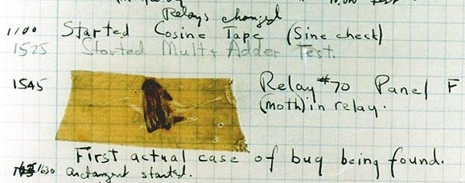
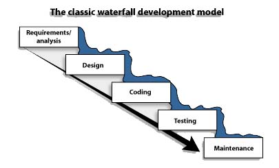

Computing, from Creationism to Evolutionism
Logogonies and Anthropodicies
François-René Rideau, TUNES Project
Salon des Refusés, 2017-04-04
http://github.com/fare/evo2017Introduction
Stories
Origin Stories
Reboots
The Origin of the World
a.k.a. Cosmogony
Theodicy
Trial of God

Logogony and Anthropodicy
The word
impossibleis not in my dictionary — Napoleon
Logogony: Story of Origins of Software
Anthropodicy: the Trial of Man
Not about God(s) creating Man
About Man (Men) creating Software
Does Man Exist?
Simplest Logogony
Software exists because...
Man wrote it!

Instant Creationism
Only Tool: Pen and Paper
Also (detail): A switchboard
Simplest Anthropodicy
There are software defects because of...
Bugs!
The Devil
Real Tools!
The first programming language!
Better Stories = Better Tools
The Devil Mixin
trait WithDevil extends Logogony
The limits of Instant Creationism
Layered Creation
On day 1, Man separated requirements from bugs.
On day 2, Man divided the program into routines.
...
On day 7, Man rested as the demo ran flawlessly.
Flow Charts

Top-Down Design
Algorithms: Divide and Conquer
FORTRAN
Layered Creation with a Devil
Iterated Creation
Fossils
Intelligent Design
Ego Boost
Structured Programming
Programming Infrastructure
Polytheism
Polyanthropistic Tools
Polytheism + Devil = Titanomachy
Access Control
Unintelligent Design

Prosthetic Devices

Idiot Proofing
Better tools comes from Humility
Hypocrisy
Lamarkism

Tools from Lamarkism

Incrementality
Evolutionism
Supernatural Selection
Tools from Supernatural Selection
Teleological Evolution
Tools from Teleological Evolution
Still not Humble Enough
Natural Selection
A tautology is a statement that is tautological
Cui bono?
A Pawn in Software Evolution
Tools from Natural Selection
Does Man Exist?
Darwinistic Tools
Darwinistic Meta-Tools
No Silver Bullet
Evolution is an Inside Job
Tools for Evolution Insider

Stories Evolve!
Better Stories = Better Tools
Better Tools = More Humility
A tautology = A tautology
The Soul = YOU